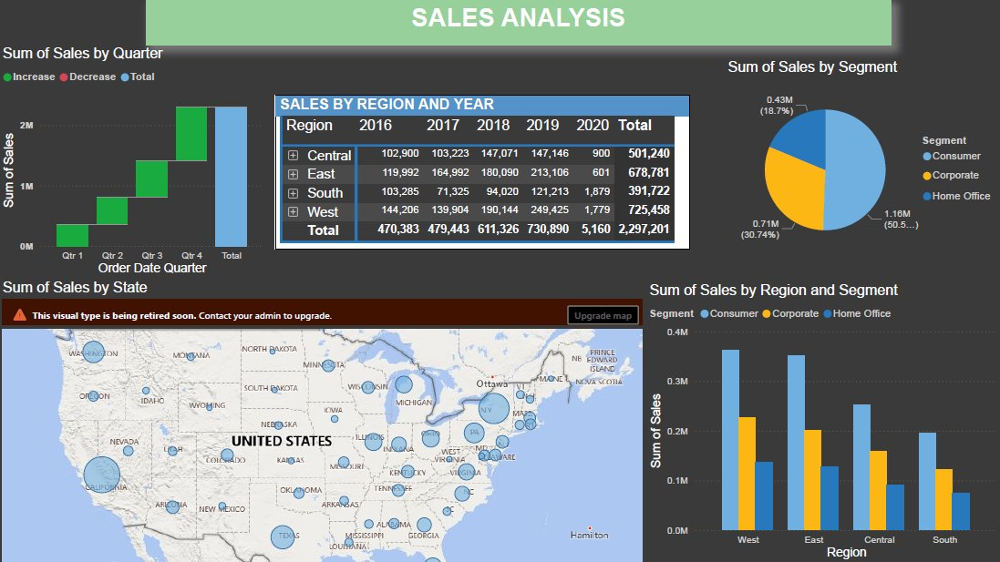
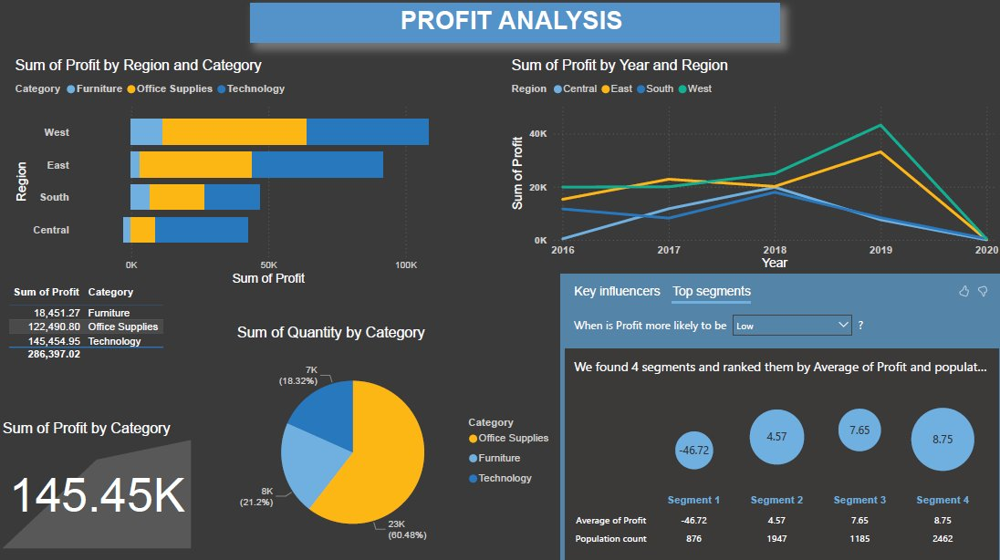

1. Overview
This project showcases my data visualization and dashboard design skills using Power BI. I was given a draft .xlsx file and a raw Excel dataset simulating a retail superstore's sales. My task was to improve the draft dashboard and deliver a clean, insightful report for decision-makers.
2. Objective
To provide clear, actionable insights into sales, profit, and regional performance using interactive dashboards. The goal was to enable both executives and operational managers to quickly understand key metrics and uncover opportunities for growth.
3. Key Features of the Dashboard
- Dynamic Region Filter — allows decision-makers to view regional performance quickly
- Profit Tree Map — helps explore which categories and sub-categories are driving profit or loss
- Sales & Profit Overview Cards — highlight the current status with clear KPIs
- Interactive Charts — support drill-down by product category, segment, and time
- Improved Color Scheme & Layout — redesigned for clarity and user-friendliness
4. Business Value Delivered
- Highlighted underperforming categories and regions
- Helped executives visualize profit contributions at a glance
- Enabled strategic product and regional comparisons for investment decisions
5. Tools Used
- Microsoft Power BI
- DAX for KPIs
Dashboard Snapshots

Sales Analysis: quarterly sales trend, regional breakdown, segment split, and US geographic distribution.

Profit Analysis: profit by region & category, yearly trends, and key influencer segmentation surfacing low-profit drivers.